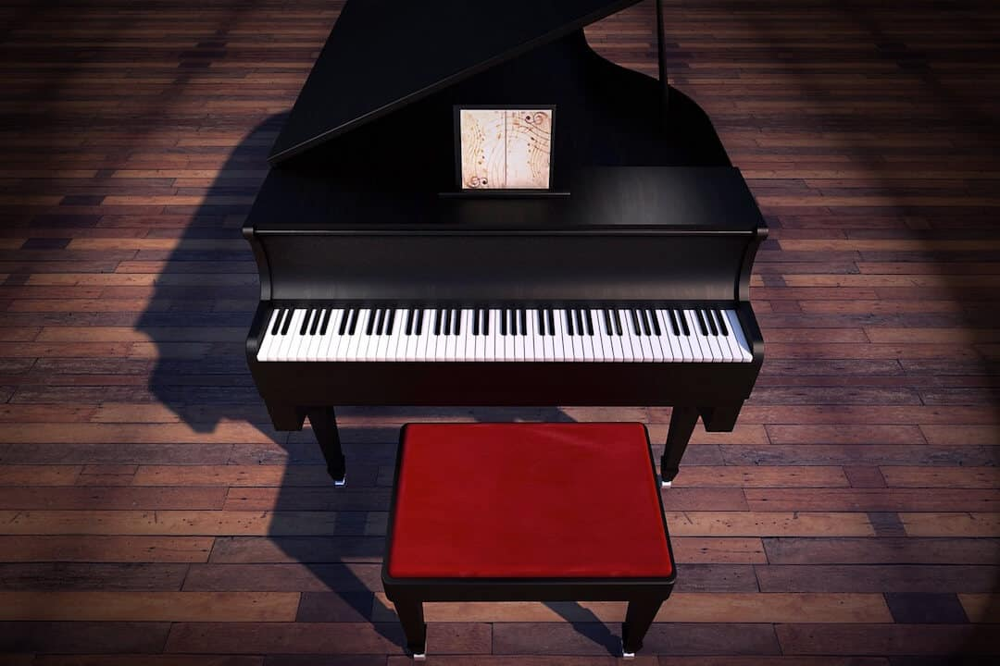

EL PIANO

El piano es un instrumento musical armónico clasificado como instrumento de cuerda percutida por
el
sistema de clasificación tradicional, y según la clasificación de Hornbostel-Sachs es un cordófono simple.
El
músico que toca el piano se llama pianista.
Está compuesto por una caja de resonancia a la que se ha agregado un teclado mediante el cual se percuten
las
cuerdas de acero con martillos forrados de fieltro, produciendo el sonido, Las vibraciones se transmiten a
través de los puentes a la tabla armónica, que las amplifica. Está formado por un arpa cromática de cuerdas
múltiples, accionada por un mecanismo de percusión indirecta, a la que se le han añadido apagadores. Fue
inventado en torno al año 1700 por el paduano Bartolomeo Cristofori. Entre sus antecesores se encuentran
instrumentos como la cítara, el monocordio, el dulcémele, el clavicordio y el clavecín (del que deriva la
forma,
pero no la mecánica).
A lo largo de la historia han existido diferentes tipos de pianos, pero los más comunes son el piano de cola
y
el piano vertical o de pared. La afinación del piano es un factor primordial en la acústica del instrumento
y se
realiza modificando la tensión de las cuerdas de manera que estas vibren en las frecuencias adecuadas.
En la música occidental, el piano se puede utilizar para la interpretación solista, para la música de
cámara,
para el acompañamiento, para ayudar a componer y para ensayar. Las primeras composiciones específicas para
este
instrumento surgieron alrededor del año 1732; entre ellas destacan las doce sonatas para piano de Lodovico
Giustini tituladas Sonate da cimbalo di piano e forte detto volgarmente di martelletti. Desde entonces,
muchos
han sido los compositores que han realizado obras para piano y en muchos casos esos mismos compositores han
sido
pianistas. Destacan figuras como Frédéric Chopin, Franz Liszt, Wolfgang Amadeus Mozart, Ludwig van
Beethoven,
Claude Debussy o Piotr Ilich Chaikovski. Fue el instrumento representativo del romanticismo musical y ha
tenido
un papel relevante en la sociedad, especialmente entre las clases más acomodadas de los siglos xviii y xix.
Tipos de pianos
Piano de cola
Un piano de cola de la casa Bösendorfer.
Un piano de cola es un tipo de piano en el que las cuerdas y la caja de resonancia se encuentran en posición
horizontal. Los pianos de cola tienen una tapa superior que se puede abrir, de manera que los sonidos
producidos por las cuerdas salen al exterior sin barreras de ningún tipo.
Su tamaño puede variar dependiendo del fabricante y tipo de piano de cola fabricado, pero suelen oscilar
entre los siguientes valores:
- piano de cola mignon: hasta 130 cm de longitud.
- piano de un cuarto de cola: de 131 hasta 189 cm de longitud.
- piano de media cola: de 190 hasta 225 cm de longitud.
- piano de tres cuartos de cola: de 226 hasta 255 cm de longitud.
- piano de gran cola: superiores a 256 cm de longitud.
Todas las fábricas de pianos producen pianos excepcionales artcase. Algunos solo poseen decoraciones o
modificaciones estéticas, como pies trabajados, marquetería, pintura o revestimiento. Otras son
modificaciones radicales, como el Pegasus de Schimmel o M. Liminal diseñado por NYT Line y fabricado por
Fazioli.
Piano vertical o piano de pared
Piano vertical o de pared.
En 1795, se desarrolló en Londres el primer piano vertical. Su diseñador fue William Stodart.16 El piano
vertical se caracteriza por tener las cuerdas, los macillos y la caja de resonancia en posición vertical,
perpendicular al suelo.
De modo general, se pueden dividir entre cuatro tipos distintos dependiendo de su tamaño:
- Piano vertical espineta: el más pequeño en su categoría con un sonido característico, piano de máquina
indirecta (quiere decir que el mecanismo se encuentra por debajo del teclado). Su altura es menor a 98 cm.
- Piano vertical consola: son pianos de máquina directa, es decir, el mecanismo está al mismo nivel del
teclado. De 98 a 109 cm de altura.
- vertical de estudio: son pianos de máquina directa, con el mecanismo un poco más elevado del nivel del
teclado. Esta característica proporciona al intérprete una mayor seguridad. De 110 a 139 cm de altura.
- Piano vertical antiguo: son pianos con una gran capacidad acústica, de máquina directa aún más elevada que
el piano de estudio. Su medida de altura es muy variable dependiendo del fabricante pero suele tener más de
140 cm de altura.
Piano electrónico
Piano electrónico.
Artículo principal: Piano electrónico
Véanse también: Órgano Hammond y Teclado electrónico.
El piano electrónico es una invención del siglo xx. Tiene la misma apariencia del piano. La diferencia es
que el sonido proviene de medios de síntesis electrónica. Además, puede reproducir el sonido de diferentes
instrumentos y muchas veces incorpora canciones y ritmos predeterminados.
Los ritmos que vienen incorporados sirven para tocar los acordes con una sola tecla en diferentes estilos.
Algunas tienen todo un sistema educativo, como el Yamaha Education System, el sistema de aprendizaje de
Casio o el DoReMi de Roland. Con estos sistemas educativos se pueden aprender canciones, porque el sistema
indica la tecla a presionar. Se pueden practicar fragmentos de canción, inclusive. Algunos modelos traen
incorporado un metrónomo para poder sincronizar exactamente con la velocidad de la melodía.
El intérprete puede guardar canciones tocadas por él mismo, para volver a escucharlas después. También puede
grabar la melodía para cada mano independientemente. Hay variedades que son sensibles al tacto, es decir,
detectan la fuerza con que son presionadas las teclas, como en un piano real y actúan en consecuencia,
reproduciendo el sonido con mayor o menor fuerza, según el caso.
Existen teclados electrónicos que cuentan con una pantalla LCD en la que se puede apreciar el pentagrama, la
nota presionada (en un teclado dibujado) y las canciones. Tienen accesorios opcionales como el pedal y el
cable para conectarse con un ordenador y se pueden transferir canciones a través del mismo. También se
pueden enviar canciones desde el teclado hacia el computador por medio de un software de autoría de MIDI
(MIDI authoring). Otros accesorios son el atril para colocarla y la base para las partituras.
La calidad de su sonido no es la misma que la de un piano normal y la fuerza con que se tocan las teclas
también es diferente, aunque su precio es mucho menor.
Otros tipos
Un piano vertical de juguete. Este tipo de piano fue un invento de Albert Schoenhut.
Un piano con pedales vertical.
El piano de juguete fue inventado por Albert Schoenhut en 1872 y comenzó a ser fabricado a finales del siglo
xix. Es utilizado en ciertas obras de la música contemporánea, como por ejemplo en las interpretaciones de
las obras de John Cage por Margaret Leng Tan, así como por ciertos artistas populares tales como Pascal
Comelade y Pascal Ayerbe.
En 1863, Henri Fourneaux inventó la pianola que es un piano que reproduce de forma automática, usando
dispositivos neumáticos, las notas escritas en un rollo perforado sin necesidad de un pianista. Un
equivalente moderno a la pianola es el sistema Yamaha Disklavier que usa solenoides y archivos MIDI en lugar
de los dispositivos neumáticos y los rollos perforados. El piano silencioso, que permite que un piano normal
sea usado como un instrumento digital, es un invento reciente pero se ha hecho muy popular.
Irving Berlin utilizó para componer con más facilidad un instrumento llamado piano transpositor, creado en
1801 por Edward Ryley. Este instrumento podía cambiar de tonalidad al accionar una palanca situada debajo
del teclado. Uno de los pianos utilizados por Berlin se encuentra en el Instituto Smithsoniano. En la mayor
parte de su carrera, Berlin solo supo utilizar las teclas negras del piano pero con este piano modificado no
tuvo limitaciones con la tecla de fa♯.
El piano preparado es un invento relativamente reciente, que es usado en la música contemporánea. Este
instrumento es un piano de cola normal al que se le han colocado objetos en su interior para alterar su
sonido o que ha recibido algún tipo de cambio en su mecanismo. Las partituras de las obras para pianos
preparados a menudo instruyen al pianista sobre cómo insertar pequeñas piezas de caucho o metal, como
tornillos o arandelas, en medio de las cuerdas. Estos elementos añadidos reducen el sonido de las cuerdas o
crean sonidos poco corrientes debido a la alteración de la vibración de las mismas.
El piano jirafa o piramidal es un piano de cola, creado en 1735, con la caja de resonancia en posición
vertical hacia arriba, perpendicular al teclado. Su nombre le viene de la similitud que guarda su
decoración, compuesta por una voluta formada por la intersección del lado curvo con el lado recto, con una
jirafa. El objetivo de colocar la caja en forma vertical era reducir el volumen del mueble del instrumento
pero tenían el inconveniente de ser demasiado altos. Este problema se solucionó bajando la caja hasta el
suelo y cruzando las cuerdas para que ocuparan menos espacio.17
El piano rectangular es un tipo de piano que tiene las cuerdas horizontales dispuestas en diagonal a través
de la caja de resonancia rectangular por encima de los martillos y con el teclado fijado en el lado largo.
El piano con pedales es un tipo de piano que incluye un pedalier, habilitando el registro grave para ser
interpretado con los pies al igual que un órgano común.